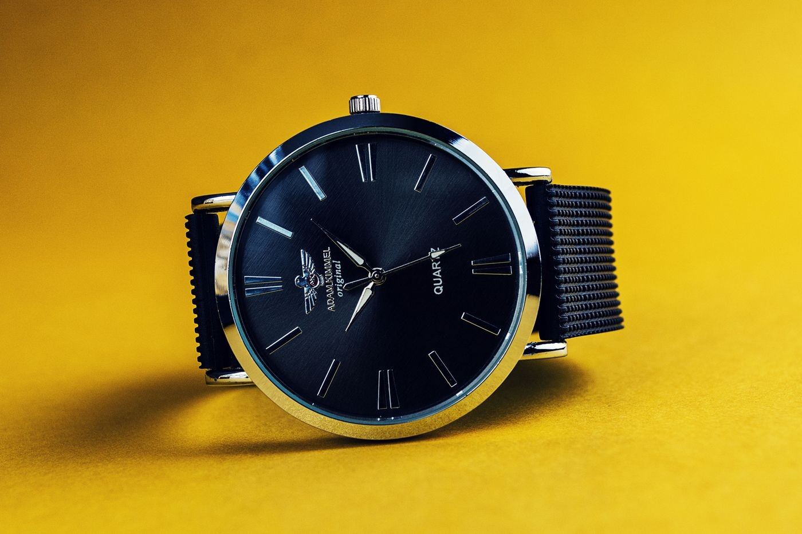

Horological & Atelier FAQ
Essential guidance on private salon appointments, caliber authentication standards, security protocols, and lifelong mechanical maintenance.
Everything you need to know about our salon
Whether you are attending your first bench consultation or expanding a seasoned multi-complication collection, we believe in providing comprehensive clarity prior to your appointment.
Review our core policies below or speak directly with our concierge team at +1-888-634-8921.

1. Salon Appointments & Private Viewings
How do I schedule a private viewing of a specific reference?
Reservations can be requested via our online booking stepper or by calling our desk. Our concierge will review vault availability, pull the requested calibers from our safe, and ensure an authenticated timing report is prepared for your arrival.
Is there any obligation to purchase during a private viewing?
Zero obligation whatsoever. Our salon viewings are curated educational experiences designed for mechanical appreciation. You will be seated with a trained watchmaker who will explain movement architecture, hand-finishing, and timing metrics without sales pressure.
2. Caliber Authentication & Provenance
How does Aperture Castle verify timepiece authenticity?
Every piece undergoes forensic examination by our senior watchmakers. We verify bridge beveling, serial engravings, wheel tooth profiles, and caliber stamps under high magnification, cross-referencing archives with manufacturer heritage departments.
What documentation accompanies an acquired timepiece?
Every acquisition includes the official Aperture Castle Horological Passport. This document details the watch's serial number, full overhaul date, acoustic vibrograf timing metrics across five positions, balance amplitude records, and water-resistance pressure logs.
3. Security Deposits & Cancellation Protocols
Why is a card guarantee required for booking a viewing?
Because our master horologists dedicate hours to retrieving rare calibers from off-site secure vaults and performing pre-session acoustic regulations, reservations require a card guarantee. No charge is made online; fees only apply for unnotified no-shows in accordance with our Cancellation Policy.
How can I reschedule or cancel my salon session?
Appointments may be rescheduled or cancelled without fee up to 48 hours prior to your scheduled time by emailing concierge@aperturecastle.com or telephoning our desk. Inside 48 hours, late cancellation provisions apply.